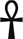

La sensación de ardor disminuye demasiado lentamente, tanto que no estoy seguro de cuándo termina y se convierte simplemente en un recuerdo que me hace estremecer en el lugar.
No sé cuánto tiempo pasa después de eso. Espadas de bronce ensombrecidas me rodean. Me quedo tendido sobre la fría piedra, temblando, mirando la oscuridad, mientras mi mente intenta ocultar el dolor y el miedo.
"Levantarse."
La voz penetra mi consciencia. Suave y urgente. Me incorporo con un gemido. La inquietante luz roja ha regresado a la habitación. Hay alguien agazapado a pocos metros, justo detrás de las garras que me rodean.
—No tenemos mucho tiempo. —El hombre me observa. Es cinco, quizá diez años mayor que yo. Moreno y delgado, con una barba espesa y descuidada y una mata de pelo negro y rizado. Tiene una cicatriz en la mejilla, que se extiende hacia atrás para reemplazar su oreja izquierda. Sus serios ojos marrones me clavaron en los míos. —¿Cómo te llamas?
“Vis.”
Bienvenida a Obiteum, Vis. ¿Te envió Veridius?
—¿Qué? No, la verdad es que no. Yo... no. —Miro más allá de él. La cabeza todavía me da vueltas—. ¿Esto... es Obiteum? Parece el mismo.
—Cambiarás de opinión cuando salgamos —dice secamente—. ¿ Pero conoces a Veridio?
—Sí. Es el Principalis de la Academia. —Me levanto tambaleándome. Ansioso por salir de ese círculo de metal, pero receloso del hombre que está al otro lado. No parece dispuesto a entrar en el círculo—. ¿Quién eres?
—Principalis. Claro que sí —murmura el desconocido para sí mismo, con una leve sonrisa en los labios. Vuelve a fijarse en mí—. Me llamo Caeror. No sé cuánto sepas, pero tenemos unos dos minutos para salvarte de vuelta en Res. Así que tienes que confiar en mí y salir de ahí ahora mismo .
Me cuesta comprenderlo. Míralo de nuevo, míralo de verdad esta vez. Las similitudes son tan obvias que me siento tonta por no haberlo notado antes.
¡Maldita sea! Eres tú. Tu hermano cree que estás muerto.
Caeror se queda paralizado. "¿Conoces a Ulciscor ? ¿Está bien? ¿Está..." Su voz se apaga, retomando el movimiento. "Luego." Hace un gesto urgente.
La incertidumbre aún me paraliza. "¿Qué quieres decir con 'sálvame de vuelta en Res'?"
Caeror aprieta los dientes. Inquieto y sin aliento. "Te han... copiado, supongo. Igual que el mundo hace miles de años en la guerra contra la Concurrencia. Así es como llegaste aquí". Gruñe al ver mi mirada. "A mí también me sorprendió. Pero ahora mismo no importa. Sigues muy conectado con Res y Luceum, pero eso se desvanecerá rápido. Puedo explicarte más tarde, pero solo si no estás muerto ". Habla tan rápido que es difícil seguirlo. Sin embargo, su desesperación es inconfundible. Me ruega que le crea.
Cierro los ojos. Estoy abrumado. No entiendo qué está pasando.
Podría hacer algo peor que confiar en alguien que aparentemente lo hace.
—De acuerdo. —Sigo temblando. La luz roja parpadea y se difumina. Doy un paso hacia él. Otro, luego otro, hasta que tropiezo en el hueco del bronce.
Caeror me ayuda a estabilizarme al llegar a él. Me agarra fuerte y asiente para tranquilizarme. "Bien. Lo primero que tenemos que hacer es enviarte un mensaje a Res, para que no te muevas de la puerta todavía".
Saca una espada corta de su cinturón. Disculpándose, me aprieta la empuñadura con firmeza.
“Retírate la manga, Vis”.